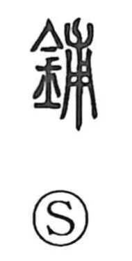

舗

Uncategorized
Kun: | On: ho
shop ・ store ・ to line up ・ to lay ・ to pave ・ to spread
Explanation
A phono-semantic character with 甫 as its phonetic core, furnishing the on-reading ho. The graph 甫 originally depicts a young plant with its roots. In the Shuowen it appears as 鋪 and is explained as the metal fittings of a door or gate. In later usage the form 舗 came to express laying out or arranging in rows, hence its use in words such as 店舗 (shop) and, by extension, the sense of laying or paving a surface, as in 舗石 and 舗装.